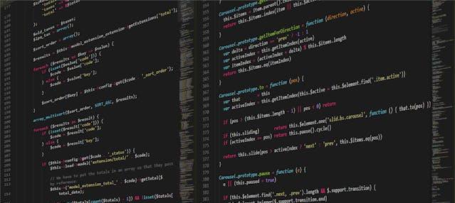

Explorando o Mundo da Programação
Bem-vindo ao fascinante universo da programação, onde linhas de código se transformam em soluções criativas e inovadoras. Neste site, vamos mergulhar fundo na arte da codificação, explorando conceitos, técnicas e ferramentas que impulsionam a criação de software em todas as áreas. Prepare-se para uma jornada emocionante de aprendizado e descoberta!
Fundamentos da Programação
Antes de mergulharmos em projetos complexos, é essencial entender os fundamentos da programação. Nesta seção, vamos explorar os conceitos básicos, como variáveis, estruturas de controle, funções e orientação a objetos. Compreender esses pilares é crucial para construir uma base sólida e avançar para desafios mais complexos no mundo da codificação.
Desenvolvimento Web e Mobile
O desenvolvimento web e mobile está na vanguarda da tecnologia, impulsionando a inovação em aplicativos, websites e plataformas online. Nesta seção, vamos explorar as tecnologias mais populares, como HTML, CSS, JavaScript, React, Node.js e React Native. Aprenderemos a criar interfaces incríveis, interações dinâmicas e experiências de usuário imersivas para a web e dispositivos móveis.
Ciência de Dados e Inteligência Artificial
A ciência de dados e a inteligência artificial estão transformando a maneira como usamos e entendemos os dados. Nesta seção, vamos explorar técnicas de análise de dados, machine learning e deep learning. Descobriremos como extrair insights valiosos, criar modelos preditivos e desenvolver sistemas inteligentes que impulsionam a inovação em todas as áreas, desde a saúde até o entretenimento.